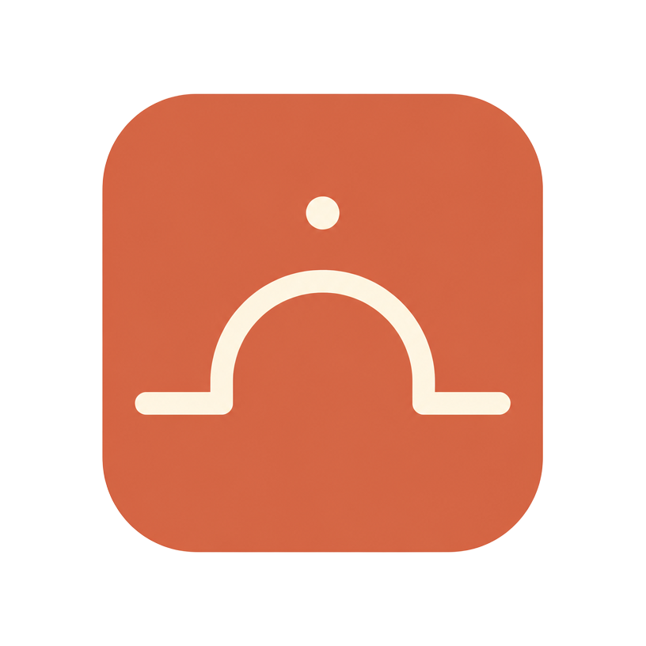

MORE4U / ORGANIZATION

Your day,
organized.
Dayline is an organization and productivity platform designed to bring schedules, tasks, contacts, reminders and everyday planning together.
The current public release is a prototype built with Lovable. We released it early because we want honest feedback from real people before the official hand-built version.
Schedule
Keep the shape of the day visible.
Tasks
Turn intentions into things you can do.
Reminders
Useful notifications when they matter.
Context
Bring the pieces of life together.
THE PROTOTYPE
Use it. Break it. Tell us what matters.
Dayline's current release is intentionally a prototype. It gives people something real to experience while the ideas are still being shaped.
Feedback now can help guide the official hand-built version later. If something feels confusing, missing, useful or surprisingly good, we want to hear it.